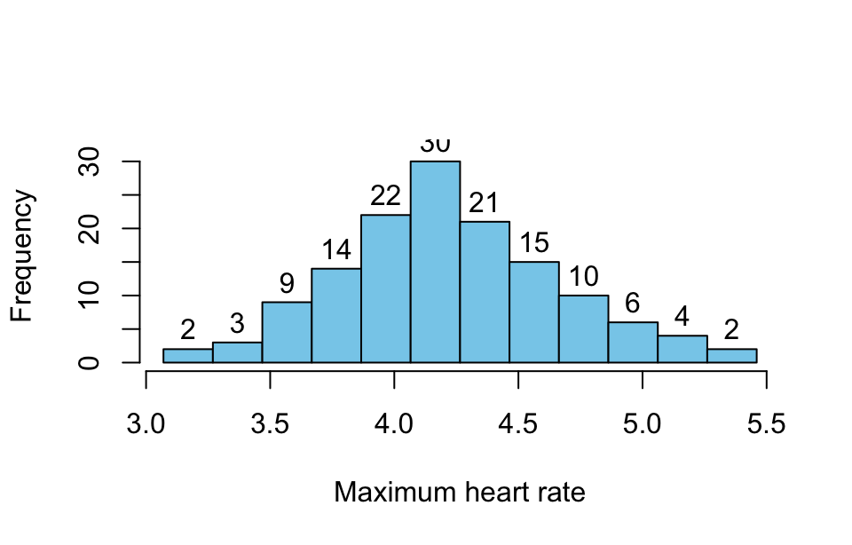
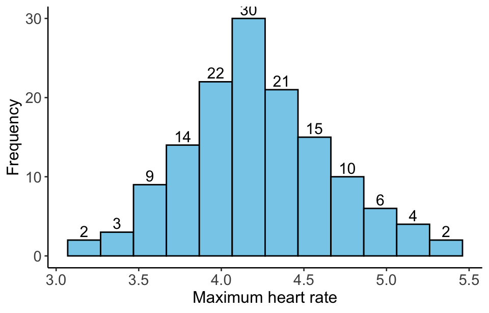

library(tidyverse)3 Statistical description of quantitative data
The statistical description of quantitative data involves summarizing and analyzing numerical variable to understand its distribution and characteristics. Key measures include:
- Visualization: frequency table and frequency histogram.
- Measures of central tendency: mean, median.
- Measures of dispersion: range , variance, standard deviation , and interquartile range (IQR).
Together, these measures help describe the data’s overall distribution, identify outliers, and inform statistical analysis in clinical and epidemiological research.Prerequisites
3.1 Prerequisite
Setting up the required R packages.
Example 1:
A researcher used a random sampling method to examine the red blood cell counts of 138 normal adult women. The measuring results are saved in a data file. Please use the data to create a frequency distribution table.
Click on the download button above to download the data file. Save it in your working directory and import the data file into R using the code below.
rbc <- read_csv("datasets/ex03-01.csv")#> Rows: 138 Columns: 1
#> ── Column specification ─────────────────────────────────────────────────────
#> Delimiter: ","
#> dbl (1): rbc
#>
#> ℹ Use `spec()` to retrieve the full column specification for this data.
#> ℹ Specify the column types or set `show_col_types = FALSE` to quiet this message.Here we use the read_csv() function. The first argument is the most important: the path to the file. You can think about the path as the address of the file. The code above will work if you have a ex02-01.csv file in the datasets folder of your project.
When you run read_csv(), it prints out a message telling you the number of rows and columns of data, the delimiter that was used, and the column specifications (names of columns organized by the type of data the column contains). It also prints out some information about retrieving the full column specification and how to quiet this message.
The data file has only one column with name rbc. Let’s check if there are some missing values present in it.
rbc |>
anyNA()#> [1] FALSEThe output FALSE indicates no missing values is present.
3.2 Visualization
3.2.1 Frequency table
A frequency table mentioned here is a statistical tool that organizes data into intervals and lists the number of frequency in each interval. It helps summarize large dataset by showing how often each value or range of values occurs, making it easier to identify trends and the overall distribution of the data. This table is often used in conjunction with visual tools like histogram to enhance data interpretation.
Here is the steps for creating a frequency table for continuous variables.
- Computing the minimum and maximum of the variable.
min_rbc <- rbc |>
min()
max_rbc <- rbc |>
max()- Determining the number of intervals. The number of intervals is typically between 10 and 15; here, we adopt 10. The
seq()function is used to obtain upper and lower limits of the intervals.
bins = 12
breaks <- seq(min_rbc, max_rbc, length.out = bins + 1)
breaks#> [1] 3.070000 3.269167 3.468333 3.667500 3.866667 4.065833 4.265000 4.464167
#> [9] 4.663333 4.862500 5.061667 5.260833 5.460000- Using the
cut()function to dive each data into their respective intervals.
cut(pull(rbc), breaks = breaks, include.lowest = T, right = F) |>
head(40)#> [1] [3.87,4.07) [4.07,4.26) [4.26,4.46) [3.47,3.67) [5.06,5.26) [3.87,4.07)
#> [7] [4.26,4.46) [3.67,3.87) [4.66,4.86) [4.07,4.26) [4.46,4.66) [4.07,4.26)
#> [13] [3.67,3.87) [4.07,4.26) [4.26,4.46) [3.07,3.27) [4.86,5.06) [3.87,4.07)
#> [19] [4.26,4.46) [3.47,3.67) [4.46,4.66) [3.87,4.07) [4.46,4.66) [4.07,4.26)
#> [25] [4.46,4.66) [3.87,4.07) [4.26,4.46) [3.47,3.67) [4.86,5.06) [3.87,4.07)
#> [31] [4.26,4.46) [4.07,4.26) [4.66,4.86) [4.07,4.26) [4.46,4.66) [4.07,4.26)
#> [37] [4.46,4.66) [3.67,3.87) [3.87,4.07) [4.07,4.26)
#> 12 Levels: [3.07,3.27) [3.27,3.47) [3.47,3.67) [3.67,3.87) ... [5.26,5.46]- Generating the frequency table.
cut(pull(rbc), breaks = breaks, include.lowest = T, right = F) |>
table() |>
knitr::kable(col.names = c("interval", "freq"), align = "c")| interval | freq |
|---|---|
| [3.07,3.27) | 2 |
| [3.27,3.47) | 3 |
| [3.47,3.67) | 9 |
| [3.67,3.87) | 14 |
| [3.87,4.07) | 22 |
| [4.07,4.26) | 30 |
| [4.26,4.46) | 21 |
| [4.46,4.66) | 15 |
| [4.66,4.86) | 10 |
| [4.86,5.06) | 6 |
| [5.06,5.26) | 4 |
| [5.26,5.46] | 2 |
3.2.2 Frequency histogram
A frequency histogram is a graphical representation of a frequency table. It displays the distribution of numerical variales by showing the frequency (count) of a value within specific intervals (bins) on the x-axis, with the y-axis representing the frequency. Each bar in the histogram corresponds to an interval, and the height of the bar indicates how many valuess fall within that range. This visual tool is useful for quickly assessing the shape, spread, and central tendency of the data distribution.
Here we supply two methods to plot a histogram.
hist(
x = pull(rbc),
breaks = breaks,
freq = T,
right = F,
col = "skyblue",
include.lowest = T,
main = " ",
xlab = "Maximum heart rate",
ylab = "Frequency",
ylim = c(0, 32),
labels = T
)
rbc |>
ggplot(aes(x = rbc)) +
geom_histogram(
fill = "skyblue",
stat = "bin",
color = "black",
breaks = breaks,
closed = "left"
) +
stat_bin(
geom = "text",
aes(label = after_stat(count)),
breaks = breaks,
closed = "left",
size = 4,
vjust = - 0.3
) +
labs(x = "Maximum heart rate", y = "Frequency") +
theme(
axis.title.x = element_text(size = 12),
axis.title.y = element_text(size = 12),
axis.text.x = element_text(size = 11),
axis.text.y = element_text(size = 11),
panel.background = element_blank(),
axis.line = element_line(color = "black")
) 
3.3 Measures of central tendency
Central tendency is a statistical concept that refers to the measure of the center or typical value in a data set. It provides a summary of the data with a single value that represents the middle or average of the data. The most common measures of central tendency are:
3.3.1 Mean
The arithmetic average of all values. It’s calculated by summing all the values and dividing by the number of values.
For a population:
\mu = \frac{\sum x_i}{N}
For a sample:
\bar{X} = \frac{\sum x_i}{n}
where x_i represents values of a random variable X, and N and n are the sizes of the population and sample, respectively.
rbc |>
pull() |>
mean()#> [1] 4.2270293.3.2 Median
The middle value in a data set when the values are sorted in ascending order. If there is an even number of values, the median is the average of the two middle values. Unlike the mean, the median is not affected by outliers or skewed data, making it a robust indicator of central tendency. To find the median:
- Sort the data set.
- If the number of observations N is odd, the median is the middle value.
- If N is even, the median is the average of the two central values.
rbc |>
pull() |>
median()#> [1] 4.233.4 Measures of dispersion
Dispersion or variability, describe the spread or dispersion of data points in a data set. They provide insight into how much individual data points differ from the central value (mean, median, etc.). Common measures of dispersion include:
3.4.1 Range
The difference between the maximum and minimum values in the data set.
\text{range} = \text{max} - \text{min}
range(rbc) |>
diff()#> [1] 2.393.4.2 Interquartile range
Interquartile range (IQR) is the range of the middle 50% of the data, calculated as the difference between the 75th percentile (Q3) and the 25th percentile (Q1).
\text{IQR} = Q3 - Q1
You can directly use the IQR() function to get IQR.
rbc |>
pull() |>
IQR()#> [1] 0.5653.4.3 Variance
Measures the average squared deviation of each data point from the mean.
For a population:
\sigma^2 = \frac{1}{N} \sum_{i=1}^N (x_i - \mu)^2
For a sample:
S^2 = \frac{1}{n-1} \sum_{i=1}^n (x_i - \bar{X})^2
where \mu is the population mean, \bar{X} is the sample mean, x_i represents each value, and N and n are are the sizes of the population and sample, respectively.
You can directly use the var() function to get variance.
rbc |>
pull() |>
var()#> [1] 0.19867513.4.4 Standard deviation
The square root of the variance, providing a measure of spread in the same units as the data.
For a population:
\sigma = \sqrt{\frac{1}{N} \sum_{i=1}^N (x_i - \mu)^2}
For a sample:
S = \sqrt{\frac{1}{n-1} \sum_{i=1}^n (x_i - \bar{X})^2}
You can directly use the sd() function to get standard deviation.
rbc |>
pull() |>
sd()#> [1] 0.44572983.4.5 Coefficient of variation
The ratio of the standard deviation to the mean, expressed as a percentage, useful for comparing variability between variables with different units or scales.
For a population:
\text{CV} = \frac{\sigma}{\mu} \times 100%
where \sigma is the standard deviation and \mu is the mean of a population.
For a sample:
\text{CV} = \frac{S}{\bar{X}} \times 100%
where S is the standard deviation and \bar{X} is the mean of a sample.
mean <- rbc |>
pull() |>
mean()
sd <- rbc |>
pull() |>
sd()
sd / mean * 100#> [1] 10.54475